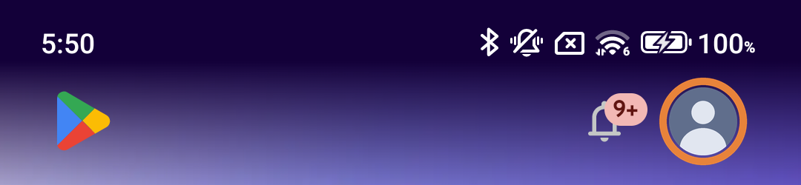
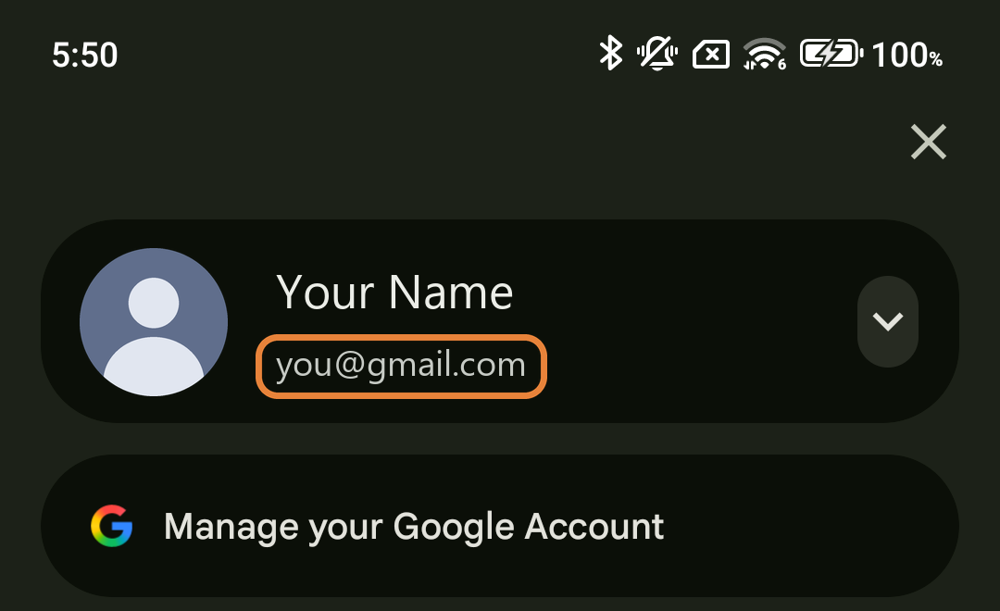
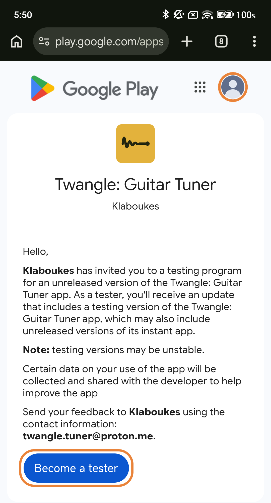
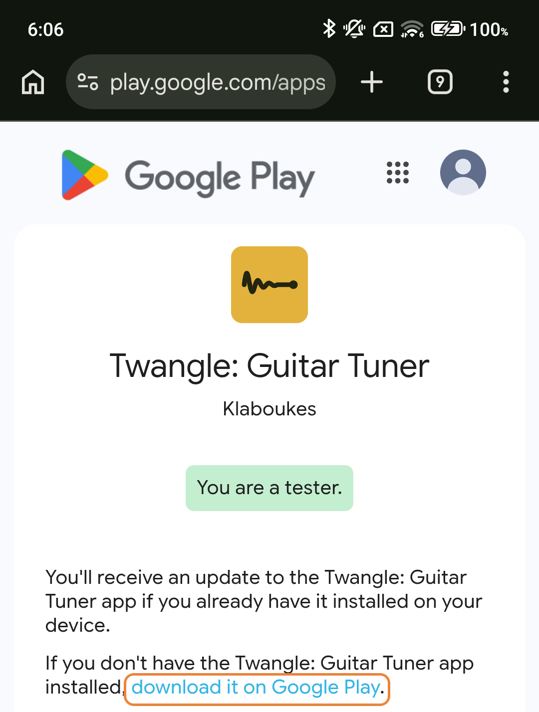
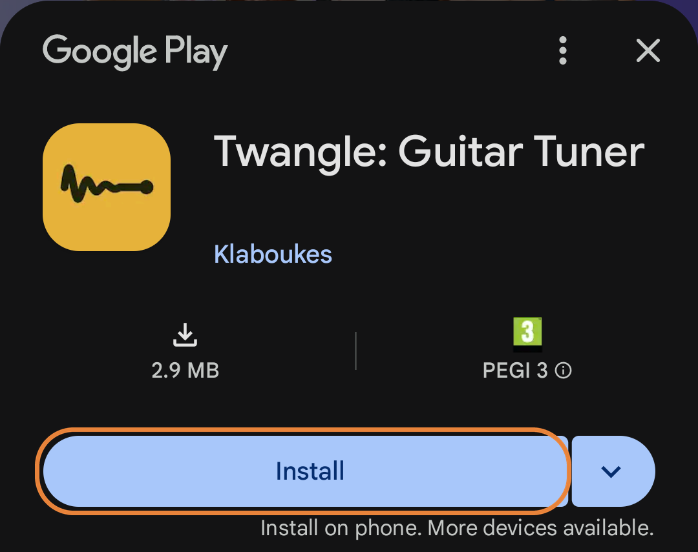

Twangle testenTesting Twangle
Dank je wel dat je wilt helpen! Doe alles op je telefoon. Het duurt een paar minuten. Thank you for helping! Do everything on your phone. It takes a few minutes.
-
Open de Play StoreOpen the Play Store
Tik rechtsboven op je ronde profielfoto. Tap your round profile picture at the top right.

-
Kijk welk e-mailadres er staatCheck the email address
Onder je naam staat een e-mailadres. Is het hetzelfde adres dat je mij gaf? Ga dan meteen door naar stap 3. There's an email address under your name. Is it the same address you gave me? Then go straight on to step 3.

Een ander adres? Stuur mij dan dit adres. Ik zet het op de lijst en laat je weten wanneer je verder kunt. A different address? Then send me this address. I'll add it to the list and let you know when you can go on.
-
Word testerBecome a tester
Tik op deze knop. (Heb je mij een ander adres gestuurd? Wacht dan eerst op mijn berichtje.) Tap this button. (Did you send me a different address? Then wait for my message first.)
Open de testpaginaOpen the test pageKijk rechtsboven: is dat dezelfde foto als in stap 1? Tik dan op Become a tester (of Word tester). Look at the top right: is it the same picture as in step 1? Then tap Become a tester.

Een andere foto of een ander account? Tik op de foto en kies het account uit stap 2. A different picture or account? Tap the picture and pick the account from step 2.
-
Open Twangle in de Play StoreOpen Twangle in the Play Store
Er staat nu You are a tester. Tik op download it on Google Play. It now says You are a tester. Tap download it on Google Play.

-
Installeer TwangleInstall Twangle
De Play Store opent. Tik op Installeren (of Install). The Play Store opens. Tap Install.

-
Blijf 14 dagen testerStay a tester for 14 days
Google telt de dagen. Laat de app staan, ook als je hem niet gebruikt. Feedback is natuurlijk heel welkom! Google counts the days. Keep the app, even if you don't use it. Feedback is very welcome, of course!
Lukt het niet?Not working?
- "Kan je niet inloggen" of "browser mogelijk niet veilig": je telefoon opent de link in een browser waarin Google niet laat inloggen (zoals DuckDuckGo). Houd de knop in stap 3 ingedrukt, kies Link kopiëren en plak de link in Chrome. "Couldn't sign you in" or "browser may not be secure": your phone opens the link in a browser where Google doesn't allow signing in (such as DuckDuckGo). Press and hold the button in step 3, choose Copy link and paste the link into Chrome.
- "Niet beschikbaar" of geen knop Installeren: wacht een paar uur en probeer het opnieuw. "Not available" or no Install button: wait a few hours and try again.
- Het lukt op een computer vaak wel: open de testpagina daar, log in met het adres uit stap 2, word tester, klik op download it on Google Play en kies je telefoon bij Installeren. It often works from a computer: open the test page there, sign in with the address from step 2, become a tester, click download it on Google Play and pick your phone under Install.
- Nog steeds niet? Stuur mij een berichtje, dan kijken we samen. Still stuck? Send me a message and we'll look at it together.